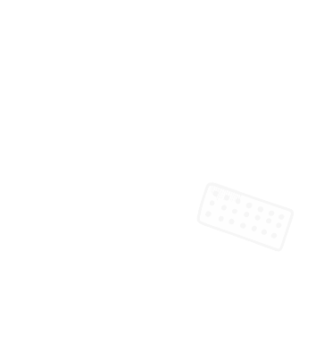
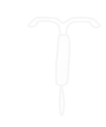
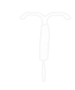

1. La pilule protège contre les grossesses non prévues et contre les Infections Sexuellement Transmissibles
(IST)
C’est faux. La pilule est un moyen de contraception. Elle permet d’éviter une grossesse non prévue mais ne peut
rien contre la transmission d’IST lors d’un rapport sexuel. Un préservatif externe (masculin) ou interne
(féminin) correctement utilisé évite toute transmission d’IST.
2. Il est plus sûr d’utiliser deux préservatifs en même temps
Complètement faux ! Mettre deux préservatifs est inutile, voire risqué. Les frottements des préservatifs entre eux
peuvent en effet entrainer une déchirure. Évitez également les lubrifiants « faits maison » (margarine, beurre,
huile de massage, etc.). Ils sont incompatibles avec les préservatifs
en latex ou en polyuréthane. Utilisez plutôt un lubrifiant à base d’eau vendu dans le commerce ou
disponible auprès de certaines associations de prévention.
3. Il faut prendre la pilule après chaque rapport
Non, c’est faux. Quand on décide de prendre une contraception hormonale comme la pilule, il
faut la prendre tous les jours à heure fixe. Pour les plaquettes de 21 comprimés, il faut arrêter de la
prendre pendant 7 jours pour avoir ses « règles ». Pour 28 comprimés, c’est une prise en continu.
En cas d’oubli, il faut se référer à la notice pour savoir s’il y a un risque de grossesse et les solutions
de recours. Astuce : pensez à mettre un réveil pour bien penser à prendre votre pilule ou pour aider
votre copine à s’en souvenir.
4. La contraception d’urgence doit impérativement
se prendre le lendemain d’un rapport non protégé
C’est faux. La pilule d’urgence doit se prendre le plus vite possible mais peut se prendre jusqu’à
3 jours après le rapport (et jusqu’à 5 jours pour la pilule EllaOne). Cependant plus elle est prise
rapidement plus elle est efficace, il est donc important de ne surtout pas attendre et de la prendre
au plus vite. Un DIU (Dispositif Intra-Utérin) au cuivre peut également être utilisé comme méthode
contraceptive d’urgence, dans les mêmes délais.
5. Il n’existe que 2 moyens de contraception : le
préservatif et la pilule
C’est faux ! DIU, implant, patch, injections… Il existe une multitude de moyens de contraception, à retrou
ver sur choisirsacontraception.fr
6. Pour une fille, la première pénétration fait
toujours mal
C’est faux. C’est souvent le stress qui peut provoquer une douleur lors d’une pénétration
(contraction musculaire du vagin, diminution de la lubrification naturelle). Si on est détendu, le
premier rapport ne devrait pas être douloureux.
7. Avoir un rapport sexuel c’est pratiquer
une pénétration
C’est faux. Les préliminaires, dont les caresses et les baisers, peuvent déjà être considérés comme un
rapport sexuel et la pénétration buccale, vaginale ou anale n’est en aucun cas une obligation.
8. Sida et VIH c’est la même chose
Non, c’est faux. Le VIH et le sida ne sont pas synonymes. Le VIH est un virus : le Virus de
l’Immunodéficience Humaine. Ce virus est responsable du sida, le Syndrome d’Immuno Déficience
Acquise. Autrement dit, le VIH est le virus qui peut, s’il n’est pas traité, entrainer le sida.
9. Si on est contaminé par le VIH, on est
forcément condamné
C’est faux. Il est possible de combattre le virus et de l’empêcher de se multiplier grâce aux médicaments qui ont
pour objectif de diminuer son impact sur l’organisme. Sous traitement, on peut donc
vivre en bonne santé. Une charge virale indétectable ne transmet pas
le VIH, c’est-à-dire que la quantité de virus dans le corps est tellement faible qu’elle devient indétectable.
Et donc le virus devient intransmissible : Indétectable = Intransmissible
10. On peut avoir une IST si on ne se lave pas bien
C’est faux ! Une IST n’a rien à voir avec l’hygiène corporelle et on a aucun risque d’être contaminé à
cause d’un manque d’hygiène. De la même manière, quelqu’un qui est porteur d’une IST n’est pas
quelqu’un de sale mais quelqu’un qui a eu un rapport non protégé avec transmission d’IST.
11. On peut transmettre le VIH en s’embrassant sur
la bouche
FAUX ! Il n’y a aucun risque de contamination par le VIH (le virus responsable du sida), lors d’un
baiser. La salive n’est pas un liquide qui permet la transmission du VIH
12. Les préservatifs protègent à la fois d’une
grossesse non prévue et des Infections
Sexuellement Transmissibles (IST)
C’est vrai ! Les préservatifs sont un moyen de contraception mais il est également le moyen le plus
sûr de se protéger contre les IST
13. On peut « tomber enceinte » à n’importe quel
moment du cycle menstruel
C’est vrai ! On peut tomber enceinte à n’importe quel moment du cycle, des ovulations spontanées
peuvent se produire à n’importe quel moment, y compris pendant les règles.
14. Si on est mineur on a besoin de l’autorisation
de ses parents pour prendre une contraception
C’est faux ! On peut se procurer une contraception sans l’autorisation de ses parents en allant chez
un médecin, un gynécologue, une sage-femme ou en se rendant dans un Centre de Planification et
d’Education Familiale (CPEF)

 
